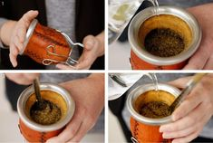
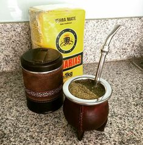
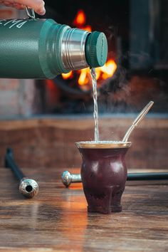

¿Como curar un mate? lava muy bien el interior del mate nuevo con agua caliente, quitándose las cutículas adheridas a las paredes. Una vez escurrido se llena con una cebadura ya usada, luego se le agrega un poco de agua tibia para que la yerba no se seque muy rápidamente.
Al día siguiente se vacía y vuelve a repetirse la operación, aunque esta vez sin lavar la calabaza. A partir del día siguiente, el mate ya está absolutamente curado y puede comenzar a utilizarse.

¿Como curar un mate? lava muy bien el interior del mate nuevo con agua caliente, quitándose las cutículas adheridas a las paredes. Una vez escurrido se llena con una cebadura ya usada, luego se le agrega un poco de agua tibia para que la yerba no se seque muy rápidamente.
Al día siguiente se vacía y vuelve a repetirse la operación, aunque esta vez sin lavar la calabaza. A partir del día siguiente, el mate ya está absolutamente curado y puede comenzar a utilizarse.

¿como limpiar el mate? Limpiar un mate es importante para mantenerlo en buenas condiciones y evitar que adquiera sabores desagradables o acumule residuos con el tiempo. Aquí tienes los pasos para limpiar un mate de manera efectiva:Vacía el mate : Comienza por vaciar los posos y la yerba usada del mate. Puedes hacerlo agitando el mate y volcando los residuos en la basura o en un compost.
Lava el mate con agua caliente : Enjuaga el mate con agua caliente para eliminar cualquier residuo de yerba mate restante. Esto también ayudará a ablandar cualquier residuo adherido a las paredes del mate.
Usa el cepillo para mate : Con el mate aún húmedo, utiliza el cepillo para mate para limpiar el interior del mate. Asegúrese de frotar bien todas las superficies, incluyendo la parte inferior y los bordes. Esto ayudará a eliminar cualquier residuo que haya quedado atrapado.
Enjuaga nuevamente con agua caliente : Después de cepillar el mate, enjuágalo nuevamente con agua caliente para eliminar los residuos liberados por el cepillado.
Deja secar al aire